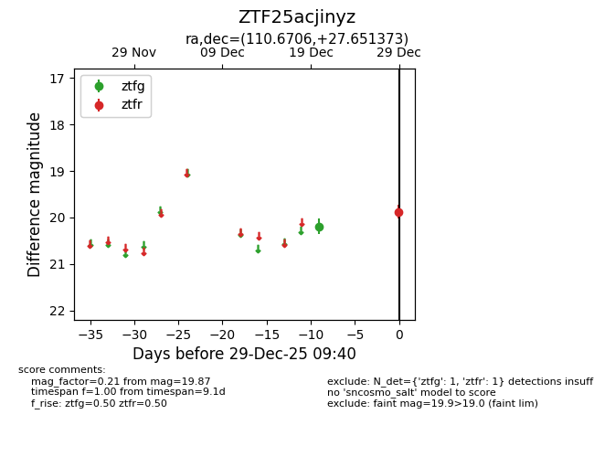
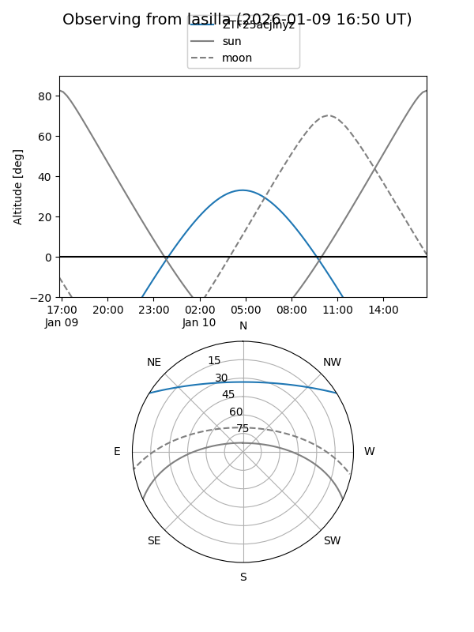
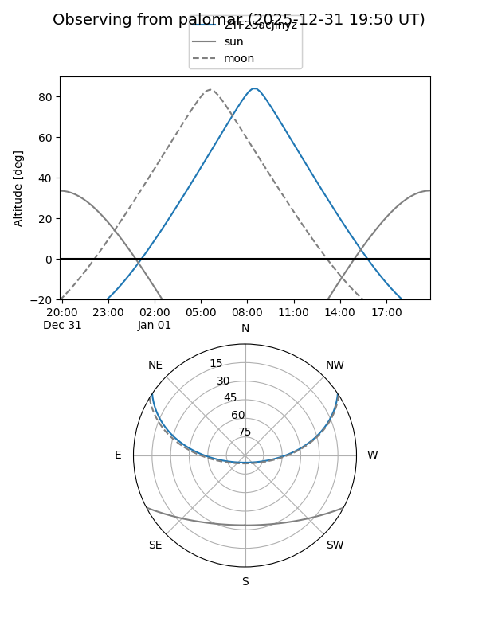

ZTF25acjinyz
Target ZTF25acjinyz at 2025-12-31 18:01
Aliases and brokers:
FINK: link
Lasair: link
ALeRCE: link
alt names
ZTF25acjinyz (ztf,fink_ztf)
Coordinates:
equatorial (ra, dec) = 110.6706,+27.65137
equatorial (HMS+DMS) = 07:22:40.94,+27:39:04.94
galactic (l, b) = (190.7313,+18.58789)
Flags:
Photometry:
last ztfg=20.19, ztfr=19.87
1 ztfg, 1 ztfr detections
Lightcurve

Visibility


Additional plots